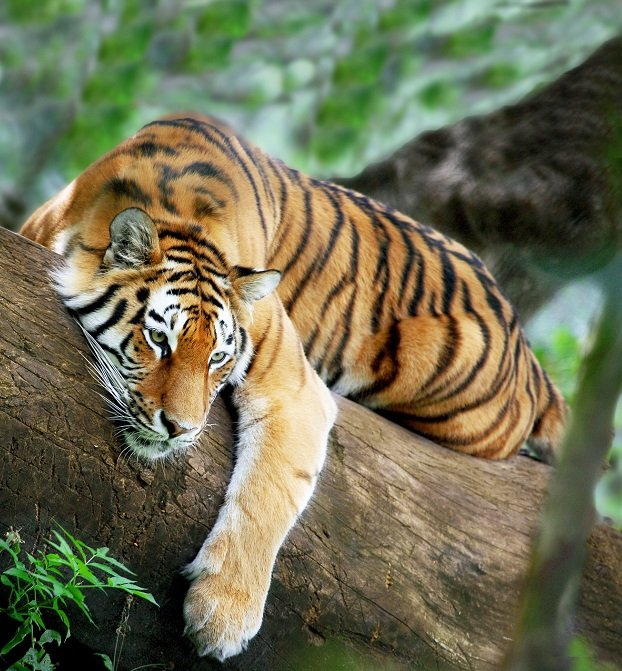
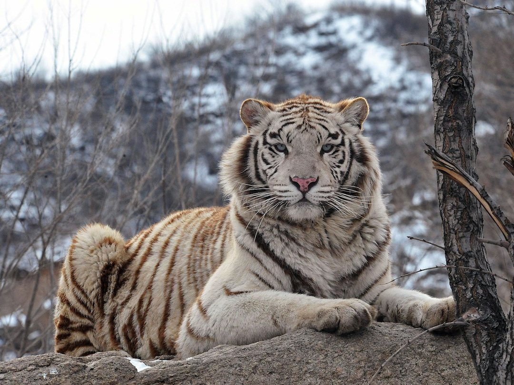

El tigre de Bengala, también llamado tigre de Bengala real o tigre indio, es una subespecie representativa de la India y Bangladesh; tanto, que es figura fuertemente ligada a la cultura, las artes, y las tradiciones de ambos lugares.
Es la especie de tigre que más abunda en el mundo. Este se ubica en sabanas, pantanos, pastizales y selvas tropicales y subtropicales de Nepal, Bután, Myanmar, Birmania y China así como en parques nacionales para su conservación. La India conserva el mayor número de población de tibre de Bengala. Aunque sumando a todos los individuos de todos los países, nos da un total aproximado de 2,500 ejemplares, una cifra realmente alarmante
DESCRIPCIÓN
Este tigre de gran tamaño llega a pesar más de 180-250 kilos y medir poco más de 3 metros de la cabeza hasta la punta de la cola. Esta última llega a medir entre 85 y 110 cm. El registro de tigre de Bengala con más peso, ha sido un macho de 258.6 kg capturado al norte de la India. Los tigres macho son más corpulentos que las hembras.
Su pelaje es de tono naranja rojizo u ocre, acompañado de franjas negras, grises o marrones, mientras la parte inferior de su anatomía es blanca o beige. Debido a una mutación genética, algunos tigres en vez de tener pelos naranjas, los tienen en color blanco, es por ello que son llamados tigres blancos.

ALIMENTACIÓN
Para los investigadores ha sido fascinante el verlos cazar. Son carnívoros y tienen una gran variedad de especies de amplio rango de tamaño dentro de su dieta. Esta va desde pavos reales, conejos y puercoespines, hasta búfalos de agua, monos, jabalíes, ciervos, antílopes, leopardos y crías de rinoceronte, oso y elefante. Cuando su apetito es inmenso, consumen hasta 40 kg de comida en una sola ocasión, pero generalmente la cantidad suele ser menor.
Tal como otros tigres, se fían de su poder de camuflaje y cautelosidad para atrapar presas por detrás o por un costado, atacando con sus garras retráctiles o con una mordedura fulminante en el cuello. Normalmente arrastran el cuerpo de su víctima a un lugar más solitario. No es frecuente que ataquen a seres humanos, pero en países como Bangladesh se reportan casos de hasta 100 enfrentamientos al año
COMPORTAMIENTO
Son animales solitarios, especialmente los machos que no conviven en grupos, a diferencia de la hembra que puede formar pequeñas agrupaciones de tres o cuatro miembros junto con sus crías. Los machos son muy territoriales, por lo que cuidan su espacio personal así como a las hembras con las que se aparean.
Ambos, macho y hembra, se relacionan solamente en temporadas de apareamiento y reproducción. Se han presentado casos donde el macho se encarga de la alimentación de la cría en caso de que la madre haya muerto. El período de gestación dura entre 98 y 108 días y dan a luz de dos a cuatro cachorros que pesan poco más de un kilo.
Tienen una corta expectativa de vida, pues tan solo llegan a vivir de 10 a 12 años en su hábitat natural, pero en cautiverio logran vivir hasta los 26. La mortalidad natural se da principalmente por los enfrentamientos entre machos.

CONSERVACIÓN
El tigre de Bengala es máximo cazador de su hábitat, lo que se entiende como un animal sin depredador directo. Más bien es el hombre quien ocasiona problemas para su supervivencia. El acelerado crecimiento de población humana en el mundo, ha obligado a que el tigre de Bengala se vea amenazado en su propio hábitat natural, ahora severamente degradado.
Estos son cruelmente masacrados por cazadores furtivos argumentando que representan un peligro para el hombre, pero al mismo tiempo aprovechan sus pieles o sus cuerpos enteros para ser disecados y expuestos como trofeos. Organizaciones mundiales como la WWF, trabajan día con día para detener la caza furtiva y reducir los constantes peligros al que se expone el tigre de Bengala.